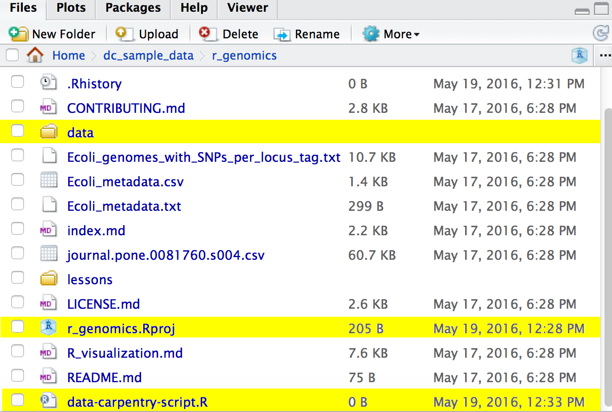

Introduction to R and R Studio
Learning Objectives
- Articulating motivations for this lesson
- Introduce participants to the RStudio interface
- Set up participants to have a working directory with a
data/folder inside - Introduce R syntax
- Point to relevant information on how to get help, and understand how to ask well formulated questions
Lesson
Presentation of RStudio
Start RStudio -- Let's start by learning about our tool.
Using RStudio Server from the Workshop Cloud
To connect to this web version of R:
- Open a web browser and enter the same IP address you were given at the workshop + :8787 (for example: http://ec2-11-11-111-11.compute-1.amazonaws.com:8787/)
- Enter dcuser and the dcuser password to login
Using RStudio on your Desktop
Start RStudio (Download here
Before we get started
- Under the
Filemenu, click onNew project, chooseNew directory, thenEmpty project - Enter a name for this new folder, and choose a convenient location for
it. This will be your working directory for the rest of the day
(e.g.,
~/dc_sample_data/r-genomics) - Click on "Create project"
- Under the
Filestab on the right of the screen, click onNew Folderand create a folder nameddatawithin your newly created working directory. (e.g.,~/dc_sample_data/r-genomics/data) - Create a new R script (File > New File > R script) and save it in your working
directory (e.g.
data-carpentry-script.R)
Your working directory should now look like this:

Interacting with R
There are two main ways of interacting with R: using the console or by using script files (plain text files that contain your code).
The console window (in RStudio, the bottom left panel) is the place where R is
waiting for you to tell it what to do, and where it will show the results of a
command. You can type commands directly into the console, but they will be
forgotten when you close the session. It is better to enter the commands in the
script editor, and save the script. This way, you have a complete record of what
you did, you can easily show others how you did it and you can do it again later
on if needed. You can copy-paste into the R console, but the Rstudio script
editor allows you to 'send' the current line or the currently selected text to
the R console using the Ctrl-Enter shortcut.
If R is ready to accept commands, the R console shows a > prompt. If it
receives a command (by typing, copy-pasting or sent from the script editor using
Ctrl-Enter), R will try to execute it, and when ready, show the results and
come back with a new >-prompt to wait for new commands.
If R is still waiting for you to enter more data because it isn't complete yet,
the console will show a + prompt. It means that you haven't finished entering
a complete command. This is because you have not 'closed' a parenthesis or
quotation. If you're in Rstudio and this happens, click inside the console
window and press Esc; this should help you out of trouble.
Basics of R
R is a versatile, open source programming/scripting language that's useful both for statistics but also data science. Inspired by the programming language S.
- Open source software under GPL.
- Superior (if not just comparable) to commercial alternatives. R has over 7,000 user contributed packages at this time. It's widely used both in academia and industry.
- Available on all platforms.
- Not just for statistics, but also general purpose programming.
- For people who have experience in programmming: R is both an object-oriented and a so-called functional language
- Large and growing community of peers.
Organizing your working directory
You should separate the original data (raw data) from intermediate datasets that
you may create for the need of a particular analysis. For instance, you may want
to create a data/ directory within your working directory that stores the raw
data, and have a data_output/ directory for intermediate datasets and a
figure_output/ directory for the plots you will generate.
Seeking help
I know the name of the function I want to use, but I'm not sure how to use it
If you need help with a specific function, let's say barplot(), you can type:
?barplot
If you just need to remind yourself of the names of the arguments, you can use:
args(lm)
If the function is part of a package that is installed on your computer but don't remember which one, you can type:
??geom_point
I want to use a function that does X, there must be a function for it but I don't know which one...
If you are looking for a function to do a particular task, you can use
help.search() (but only looks through the installed packages):
help.search("kruskal")
If you can't find what you are looking for, you can use the rdocumention.org website that search through the help files across all packages available.
I am stuck... I get an error message that I don't understand
Start by googling the error message. However, this doesn't always work very well because often, package developers rely on the error catching provided by R. You end up with general error messages that might not be very helpful to diagnose a problem (e.g. "subscript out of bounds").
check Stack Overflow. Search using the
[r]tag. Most questions have already been answered, but the challenge is to use the right words in the search to find the answers: http://stackoverflow.com/questions/tagged/rThe Introduction to R can also be dense for people with little programming experience but it is a good place to understand the underpinnings of the R language.
The R FAQ is dense and technical but it is full of useful information.
Asking for help
The key to get help from someone is for them to grasp your problem rapidly. You should make it as easy as possible to pinpoint where the issue might be.
Try to use the correct words to describe your problem. For instance, a package is not the same thing as a library. Most people will understand what you meant, but others have really strong feelings about the difference in meaning. The key point is that it can make things confusing for people trying to help you. Be as precise as possible when describing your problem
If possible, try to reduce what doesn't work to a simple reproducible
example. If you can reproduce the problem using a very small data.frame
instead of your 50,000 rows and 10,000 columns one, provide the small one with
the description of your problem. When appropriate, try to generalize what you
are doing so even people who are not in your field can understand the question.
To share an object with someone else, if it's relatively small, you can use the
function dput(). It will output R code that can be used to recreate the exact same
object as the one in memory:
dput(head(iris)) # iris is an example data.frame that comes with R
If the object is larger, provide either the raw file (i.e., your CSV file) with
your script up to the point of the error (and after removing everything that is
not relevant to your issue). Alternatively, in particular if your questions is
not related to a data.frame, you can save any R object to a file:
saveRDS(iris, file="/tmp/iris.rds")
The content of this file is however not human readable and cannot be posted directly on stackoverflow. It can however be sent to someone by email who can read it with this command:
some_data <- readRDS(file="~/Downloads/iris.rds")
Last, but certainly not least, always include the output of sessionInfo()
as it provides critical information about your platform, the versions of R and
the packages that you are using, and other information that can be very helpful
to understand your problem.
sessionInfo()
Where to ask for help?
- Your friendly colleagues: if you know someone with more experience than you, they might be able and willing to help you.
- Stackoverlow: if your question hasn't been answered before and is well crafted, chances are you will get an answer in less than 5 min.
- The R-help: it is read by a lot of people (including most of the R core team), a lot of people post to it, but the tone can be pretty dry, and it is not always very welcoming to new users. If your question is valid, you are likely to get an answer very fast but don't expect that it will come with smiley faces. Also, here more than everywhere else, be sure to use correct vocabulary (otherwise you might get an answer pointing to the misuse of your words rather than answering your question). You will also have more success if your question is about a base function rather than a specific package.
- If your question is about a specific package, see if there is a mailing list for it. Usually it's included in the DESCRIPTION file of the package that can be accessed using
packageDescription("name-of-package"). You may also want to try to email the author of the package directly. - There are also some topic-specific mailing lists (GIS, phylogenetics, etc...), the complete list is here.
Resources:
- The Posting Guide for the R mailing lists.
- How to ask for R help useful guidelines